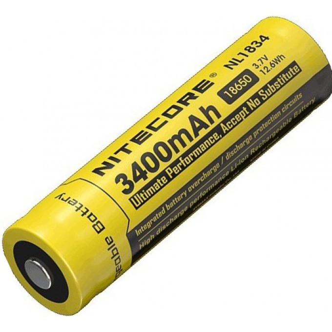
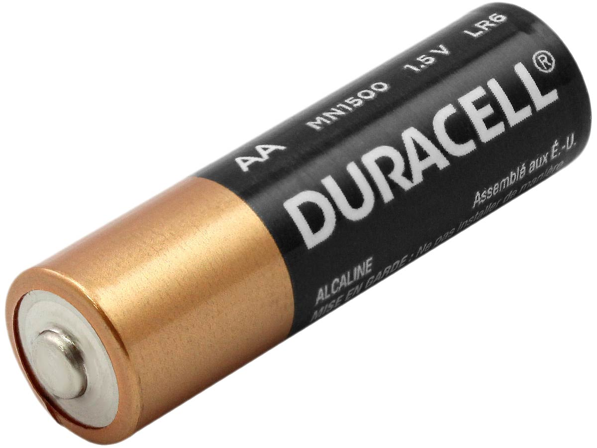
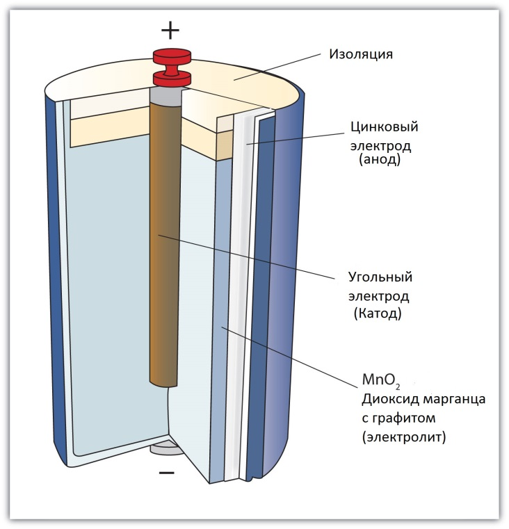
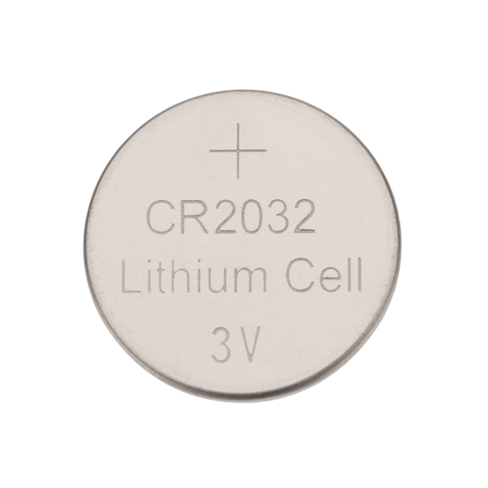
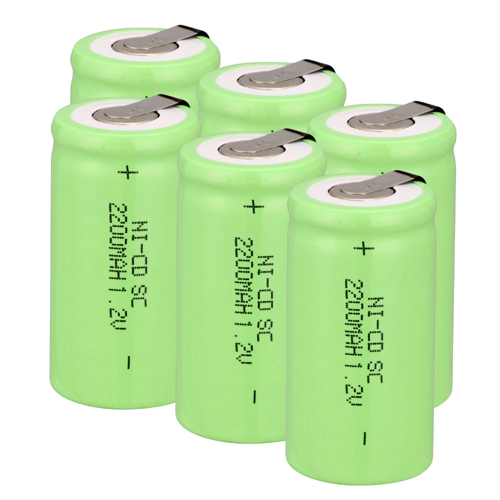

Литивые и никелевые аккумуляторы

Аккумуляторы
Аккумуляторы бывают разные например: алкалиновые, угольные, солевые, щелочные, крона и т.д.

Что такое аккумулятор ?
В широком смысле слова в технике под термином «Аккумулятор» понимается устройство, которое позволяет при одних условиях эксплуатации накапливать определенный вид энергии, а при других — расходовать ее для нужд человека.
Их применяют там, где необходимо собрать энергию за определенное время, а затем использовать ее для совершения больших трудоемких процессов. Например, гидравлические аккумуляторы, используемые в шлюзах, позволяют поднимать корабли на новый уровень русла реки.
Электрические аккумуляторы работают с электроэнергией по этому же принципу: вначале накапливают (аккумулируют) электричество от внешнего источника заряда, а затем отдают его подключенным потребителям для совершения работы. По своей природе они относятся к химическим источникам тока, способным совершать много раз периодические циклы разряда и заряда.
Во время работы постоянно происходят химические реакции между компонентами электродных пластин с заполняющим их веществом — электролитом.
Принципиальную схему устройства аккумулятора можно представить рисунком упрощенного вида, когда в корпус сосуда вставлены две пластины из разнородных металлов с выводами для обеспечения электрических контактов. Между пластинами залит электролит.

Литивый аккумулятор
CR2032

CR – обозначает гальванический не перезаряжаемый элемент. 2032 – это габаритные размеры элемента; где цифра 20 означает диаметр (20 мм), а 32 – толщину (3,2 мм). То есть, разница между элементами CR2016, CR2025, CR2032 будет лишь в их толщине и соотвественно ёмкости. Вместо CR2032 можно спокойно установить CR2025 и даже CR2016, только работать они будут несколько меньше.
Никелевый аккумулятор

Вторичный химический источник тока, в котором анодом является водородный металлогидридный электрод, электролитом - гидроксид калия, катодом - оксид никеля.
Чём литиевым аккумулятор лучше никелевого аккумулятора ?
САМАЯ ГЛАВНАЯ РАЗНИЦА это что литиевый аккумулятор служит долго чем никелевый. Другие плюсы литиевого аккумулятора
- Высокая токоотдача
- Низкий саморазряд(около 20% в год). У никеля 100% в год
- Более высокая ёмкость.